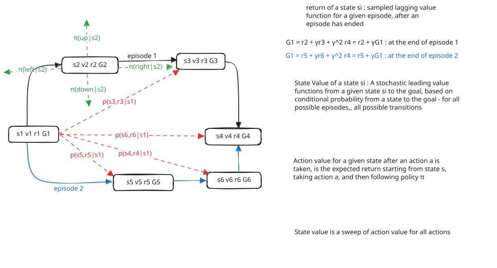

slm-lab run --renderreturn - a retrospective approach - one episode at a time : the discounted cumulative reward from time step $t$ to the end of the episode. $$G_t = R_{t+1} + \gamma R_{t+2} + \gamma^2 R_{t+3} + \dots = \sum_{k=0}^{T-t-1} \gamma^k R_{t+k+1}$$ where $\gamma \in [0,1]$ is the discount factor. $\gamma$ controls how much the agent values future rewards vs immediate rewards. $\gamma = 0$ makes the agent greedy (only cares about immediate reward), $\gamma = 1$ makes the agent far-sighted (values all future rewards equally). $G_t$ is a random variable — even for a single trajectory, the rewards depend on actions sampled from $\pi(a|s)$ and transitions sampled from $P(s',r|s,a)$. The computed value of $G_t$ is a single realization of this random variable. Its expected value, expanding the probabilities explicitly: $$E_\pi[G_t | S_t = s] = \sum_{a} \pi(a|s) \sum_{s',r} P(s',r|s,a) \left[r + \gamma , E_\pi[G_{t+1} | S_{t+1} = s']\right]$$ This is exactly $V^\pi(s)$ — the expected return is the state value function. Recursive form: $$G_t = R_{t+1} + \gamma , G_{t+1}$$ with $G_T = 0$. The return at time $t$ equals the immediate reward plus the discounted return from the next step.
state value function $V^\pi(s)$ : the expected return starting from state $s$ and following policy $\pi$. $$V^\pi(s) = E_\pi [G_t | S_t = s] = E_\pi \left[\sum_{k=0}^{T-t-1} \gamma^k R_{t+k+1} \mid S_t = s\right]$$ **expanding the expectation** — the agent picks action $a$ with probability $\pi(a|s)$, then the environment transitions to state $s'$ with reward $r$ with probability $P(s',r|s,a)$. The future return from $s'$ is still an expectation: $$V^\pi(s) = \sum_{a} \pi(a|s) \sum_{s',r} P(s',r|s,a) \left[r + \gamma , E_\pi[G_{t+1} | S_{t+1} = s']\right]$$ **recursive form (Bellman equation for $V^\pi$)** : $$V^\pi(s) = \sum_{a} \pi(a|s) \sum_{s',r} P(s',r|s,a) \left[r + \gamma , V^\pi(s')\right]$$. The value of a state equals the expected immediate reward plus the discounted value of the next state, averaged over all actions (weighted by policy) and all possible transitions.
action Value function $Q^\pi(s,a)$ : the expected return starting from state $s$, taking action $a$, and then following policy $\pi$. $$Q^\pi(s,a) = E_\pi [G_t | S_t = s, A_t = a] = E_\pi \left[\sum_{k=0}^{T-t-1} \gamma^k R_{t+k+1} \mid S_t = s, A_t = a\right]$$ **expanding the expectation** — the action $a$ is already given, so we only sum over the environment dynamics. The environment transitions to state $s'$ with reward $r$ with probability $P(s',r|s,a)$. The future return from $s'$ is still an expectation: $$Q^\pi(s,a) = \sum_{s',r} P(s',r|s,a) \left[r + \gamma , E_\pi[G_{t+1} | S_{t+1} = s']\right]$$ **recursive form (Bellman equation for $Q^\pi$)** : $$Q^\pi(s,a) = \sum_{s',r} P(s',r|s,a) \left[r + \gamma \sum_{a'} \pi(a'|s') , Q^\pi(s',a')\right]$$. The value of taking action $a$ in state $s$ equals the expected immediate reward plus the discounted action value at the next state, averaged over the next action chosen by the policy.
even with a fixed policy, both $\pi(a|s)$ and $P(s',r|s,a)$ are stochastic. From the same state $s$, different episodes produce different trajectories with different rewards, giving different $G_t$ values. One episode gives one sample — one roll of the dice. The true $V^\pi(s)$ is the average over all possible trajectories from $s$, not the return from any single one. One episode would only be sufficient if both the policy and the environment were fully deterministic — then every trajectory from state $s$ would be identical, and a single $G_t$ would equal $V^\pi(s)$ exactly.
if we run many episodes and collect the realized return $G_t$ every time we visit state $s$, the average of those realized returns converges to the true state value: $$V^\pi(s) \approx \frac{1}{N(s)} \sum_{i=1}^{N(s)} G_t^{(i)}$$ where $N(s)$ is the number of times state $s$ was visited and $G_t^{(i)}$ is the realized return from the $i$-th visit. This is the **Monte Carlo method** — it estimates the expected value by averaging samples. It requires no knowledge of $P(s',r|s,a)$ (model-free), only completed episodes. The same idea applies to $Q^\pi(s,a)$: collect realized returns every time action $a$ is taken in state $s$, and average them: $$Q^\pi(s,a) \approx \frac{1}{N(s,a)} \sum_{i=1}^{N(s,a)} G_t^{(i)}$$

In env.ipynb, the agent picks actions uniformly at random: action = env.action_space.sample(). There is no learning, no memory, no strategy. The policy is: $$\pi(a|s) = \frac{1}{|\mathcal{A}|} \quad \forall , s, a$$
This is useful as a baseline to observe what the environment looks like — what states are visited, what rewards come back, how episodes end. But the returns are poor. In Taxi-v3, for example, the random agent almost never delivers the passenger before the 200-step truncation. Every episode accumulates step penalties (-1 per step) and illegal-action penalties (-10), ending with deeply negative returns. The agent has no way to improve because it never uses the information it collects.
What is missing: the agent needs a mechanism to evaluate how good its current behavior is, and then change its behavior to be better.
Dynamic programming solves this by exploiting the full environment model $P(s',r|s,a)$. Unlike the random agent that must run episodes to see what happens, DP can compute what would happen under any policy without taking a single step.
The algorithm — policy iteration — works in a loop:
Step 1 — Policy Evaluation: how good is the current policy? Start with the same uniform random policy as env.ipynb. Compute $V^\pi(s)$ for every state by solving the Bellman equation: $$V^\pi(s) = \sum_a \pi(a|s) \sum_{s',r} P(s',r|s,a)\left[r + \gamma V^\pi(s')\right]$$ This tells us the expected return from every state *if we keep following the current policy*. For the initial uniform policy on the 3x3 grid, all V values are negative — the random policy is bad.
Step 2 — Q from V: compare individual actions $V^\pi(s)$ tells us how good a state is, but to improve the policy we need to compare actions. Convert V to Q: $$Q^\pi(s,a) = \sum_{s',r} P(s',r|s,a)\left[r + \gamma V^\pi(s')\right]$$ Now for each state, we can see which action leads to the highest expected return. This is the critical bridge — Q breaks down the state value into per-action values so we can identify which actions are better than others.
Step 3 — Policy Improvement: shift probability to the best action For each state, find $\argmax_a Q^\pi(s,a)$ — the action(s) with the highest Q value. Build a new policy that puts most probability mass on those actions:
This is no longer uniform — the policy now prefers actions that lead to higher returns.
Step 4 — Repeat until the greedy actions stop changing (the policy is stable).
The grid has state 0 (top-left) as start and state 8 (bottom-right, G) as goal. Step reward is -1, goal reward is +10.
Iteration 0 — evaluating the uniform policy:
Col 0 | Col 1 | Col 2 | |
Row 0 | -5.92 | -5.02 | -3.77 |
Row 1 | -5.02 | -3.14 | 0.25 |
Row 2 | -3.77 | 0.25 | G |
All values are negative or near zero. The random policy wanders aimlessly, accumulating -1 penalties. Q values are computed, and for state 0, Q shows that RIGHT and DOWN (both -5.60) are better than UP and LEFT (both -6.25). This makes sense — RIGHT and DOWN move toward the goal. The policy is updated: RIGHT and DOWN get high probability in state 0.
Iteration 1 — evaluating the improved policy:
Col 0 | Col 1 | Col 2 | |
Row 0 | 2.71 | 4.35 | 6.22 |
Row 1 | 4.35 | 6.46 | 8.93 |
Row 2 | 6.22 | 8.93 | G |
All values are now positive. The improved policy reaches the goal reliably enough that the +10 goal reward outweighs the step penalties. The greedy actions haven't changed from iteration 0 — the policy is already stable. Convergence in just 2 iterations.
The final policy points every state toward the goal:
+---+---+---+
|>v | v | v |
+---+---+---+
| > |>v | v |
+---+---+---+
| > | > | G |
+---+---+---+
Random agent (env.ipynb) | DP agent (dynamic-prog/) | |
Policy | Fixed uniform $\pi(a|s) = 1/|\mathcal{A}|$ | Iteratively improved toward optimal |
Uses model $P(s',r|s,a)$? | No — just samples actions and observes | Yes — computes exact expectations |
Learning | None — same policy forever | Policy evaluation + improvement loop |
Requires episodes? | Yes — must run the environment | No — plans entirely from the model |
Limitation | No improvement possible | Requires knowing the full model |
The random agent in env.ipynb gives us the floor — what happens with zero intelligence. Dynamic programming gives us the ceiling for this MDP — the optimal policy computed exactly from the known model. The gap between them is what learning algorithms (Monte Carlo, TD, Q-learning) try to close without knowing $P(s',r|s,a)$.
Dynamic programming computes exact expectations using $P(s',r|s,a)$. But in most real problems, the agent doesn't know the environment dynamics — it can only interact with the environment and observe what happens. Monte Carlo bridges this gap: it estimates $V^\pi(s)$ and $Q^\pi(s,a)$ from actual episode experience rather than from a known model.
Recall from point 8 in the Value Functions section: $$V^\pi(s) \approx \frac{1}{N(s)} \sum_{i=1}^{N(s)} G_t^{(i)}$$
This is the core idea — run many episodes, collect the realized return $G_t$ every time a state is visited, and average them. The law of large numbers guarantees convergence to the true expectation.
The Monte Carlo case study implements first-visit on-policy MC control on the same 3x3 grid-world. The algorithm:
1. Initialize — $Q(s,a) = 0$ for all state-action pairs. Start with a uniform random policy (same as env.ipynb).
2. Generate an episode — follow the current policy to produce a trajectory: $$\tau = (s_0, a_0, r_1), (s_1, a_1, r_2), \dots, (s_T, a_T, r_T)$$
This is exactly what env.ipynb does — but now we use the returns instead of just logging them.
3. Compute returns backwards — after the episode ends, walk backwards through the trajectory: $$G_t = r_{t+1} + \gamma , G_{t+1} \quad \text{with } G_T = 0$$
4. First-visit update — for each $(s_t, a_t)$ that appears for the first time in the episode, add $G_t$ to a running average: $$Q(s_t, a_t) \leftarrow \text{average of all } G_t \text{ samples for } (s_t, a_t)$$
5. Improve the policy — rebuild an epsilon-greedy policy from the updated Q values:
6. Repeat for many episodes (7000 in the case study), decaying epsilon from 0.25 to 0.02.
The training snapshots show the progression:
Episode 1 — Q values are all zero, policy is random. The agent stumbles around just like the random agent in env.ipynb.
Episode 10 — after just a few episodes, states near the goal already have meaningful Q values. State 5 (one step above goal) learns $V \approx 10.0$ quickly because any episode that reaches state 5 and goes DOWN gets +10. The policy near the goal is already correct.
Episode 100 — the near-optimal policy is largely established. Q values propagate backwards from the goal: state 7 learns RIGHT is good (leads to goal), state 4 learns DOWN is good (leads to state 7), and so on. The policy reads:
+---+---+---+
| > | > | v |
+---+---+---+
| v | v | v |
+---+---+---+
| ^ | > | G |
+---+---+---+
Episode 7000 — final converged Q values:
State | UP | RIGHT | DOWN | LEFT | Best Action | V(s) |
0 | 0.91 | 2.85 | 2.10 | 1.38 | RIGHT | 2.85 |
1 | 2.72 | 4.97 | 4.21 | 1.81 | RIGHT | 4.97 |
2 | 4.39 | 4.57 | 7.05 | 3.18 | DOWN | 7.05 |
3 | 1.08 | 3.75 | 4.92 | 1.95 | DOWN | 4.92 |
4 | 3.17 | 6.21 | 7.13 | 2.39 | DOWN | 7.13 |
5 | 4.55 | 7.23 | 9.49 | 5.32 | DOWN | 9.49 |
6 | 3.57 | 7.06 | 4.07 | 3.43 | RIGHT | 7.06 |
7 | 5.47 | 9.90 | 6.91 | 4.59 | RIGHT | 9.90 |
8 | 0.00 | 0.00 | 0.00 | 0.00 | (goal) | 0.00 |
The final policy consistently reaches the goal in 3-4 steps with return ~7:
s0 --RIGHT--> s1 --RIGHT--> s2 --DOWN--> s5 --DOWN--> s8 (return = 7)
The random agent and the early MC agent start from the same place — uniform random actions. The difference is what happens after each episode:
Random agent (env.ipynb) | Monte Carlo agent | |
After an episode | Logs returns to CSV, learns nothing | Computes $G_t$, updates $Q(s,a)$ averages |
Policy across episodes | Never changes — always uniform | Gradually shifts probability toward better actions |
Episode returns | Consistently poor (deep negatives in Taxi) | Improve over time as policy improves |
Requires model $P$? | No | No — model-free, learns from experience only |
The random agent computes returns but throws them away. The MC agent uses them to update Q, which updates the policy, which generates better episodes, which produce better return estimates — a virtuous cycle.
Better than random — MC actually learns. After enough episodes, the agent discovers which actions lead to high returns and favors them. The 3x3 grid goes from random wandering to near-optimal navigation.
Noisier than DP — compare the MC Q values to the DP Q values:
State | DP $Q^*(s, \text{best})$ | MC $Q(s, \text{best})$ | Difference |
0 | 2.77 | 2.85 | +0.08 |
4 | 6.62 | 7.13 | +0.51 |
7 | 9.19 | 9.90 | +0.71 |
MC values are close but not exact — they are sample averages, not exact expectations. With more episodes, they would converge closer to the DP values. The remaining gap comes from:
The tradeoff: DP is exact but needs the model. MC is approximate but only needs episodes. This is the fundamental model-based vs model-free divide.
MC is model-free and learns from experience — a big step up from DP's requirement of knowing $P(s',r|s,a)$. But it has two structural weaknesses:
1. Must wait for the episode to end. MC computes returns backwards from the terminal state: $G_t = r_{t+1} + \gamma G_{t+1}$. This means no learning happens *during* the episode — the agent must finish the entire trajectory before it can update any Q value. For environments with long episodes (or continuing tasks that never terminate), this is a serious problem.
2. High variance. The return $G_t$ depends on every reward from step $t$ all the way to the end. A single unlucky slip early in the episode contaminates the return for every state visited before it. More steps in the trajectory means more sources of randomness compounding into $G_t$.
Recall the MC update for Q: $$Q(s_t, a_t) \leftarrow Q(s_t, a_t) + \alpha \left[ G_t - Q(s_t, a_t) \right]$$
The target is $G_t$ — the actual complete return, which requires waiting until the episode ends.
Now recall the Bellman equation: $$Q^\pi(s,a) = \sum_{s',r} P(s',r|s,a)\left[r + \gamma V^\pi(s')\right]$$
This says the value of taking action $a$ in state $s$ equals the immediate reward plus the discounted value of the next state. DP uses this with the known model. But what if we use it with samples instead?
After taking one step — observing $r_{t+1}$ and $s_{t+1}$ — we already have a one-step estimate of the return: $$r_{t+1} + \gamma V(s_{t+1})$$
We don't know the true $V(s_{t+1})$, but we have our current *estimate* of it. This is called **bootstrapping** — using an estimate to update another estimate. This is the core idea of temporal difference learning.
The natural question is: where does $V(s_{t+1})$ come from if we haven't learned anything yet? The answer: **we initialize all values to zero (a wrong guess), and the real reward signal gradually corrects them, one state at a time, rippling backwards from the goal.**
Walk through it on the 3x3 grid ($\alpha = 0.1$, $\gamma = 0.9$, all $V$ initialized to 0):
[s0] [s1] [s2] V = [0, 0, 0, 0, 0, 0, 0, 0, 0]
[s3] [s4] [s5]
[s6] [s7] [s8=G]
Phase 1 — the goal's neighbors learn first.
The agent stumbles around randomly and eventually reaches state 7, then moves RIGHT to the goal:
Step: $s_7 \xrightarrow{\text{RIGHT}} s_8$ , reward = +10, done
TD target = $r + \gamma \times V(s_8) = 10 + 0.9 \times 0 = 10$
$$V(s_7) \leftarrow 0 + 0.1 \times (10 - 0) = 1.0$$
V = [0, 0, 0, 0, 0, 0, 0, 1.0, 0]
State 7 is no longer zero. It saw one real reward (+10) and updated. The estimate is far from the true value, but it encodes real information: "something good happens after state 7."
Similarly, another episode reaches state 5 and goes DOWN to the goal:
Step: $s_5 \xrightarrow{\text{DOWN}} s_8$ , reward = +10, done
$$V(s_5) \leftarrow 0 + 0.1 \times (10 - 0) = 1.0$$
V = [0, 0, 0, 0, 0, 1.0, 0, 1.0, 0]
Phase 2 — the signal propagates one hop backwards.
Now state 4 transitions to state 7 (which already has $V = 1.0$):
Step: $s_4 \xrightarrow{\text{DOWN}} s_7$ , reward = -1
TD target = $-1 + 0.9 \times V(s_7) = -1 + 0.9 \times 1.0 = -0.1$
$$V(s_4) \leftarrow 0 + 0.1 \times (-0.1 - 0) = -0.01$$
V = [0, 0, 0, 0, -0.01, 1.0, 0, 1.0, 0]
State 4 learned a small signal — not from the goal directly, but from state 7's estimate. The value is slightly negative because the -1 step cost dominates the small discounted estimate. But as $V(s_7)$ gets updated more (growing toward its true value), state 4's estimate will improve too.
Phase 3 — repeated visits refine the estimates.
After many more episodes, state 7 is visited repeatedly from different trajectories. Each visit nudges $V(s_7)$ closer to the true value:
Visit 2: $V(s_7) \leftarrow 1.0 + 0.1 \times (10 - 1.0) = 1.9$ Visit 3: $V(s_7) \leftarrow 1.9 + 0.1 \times (10 - 1.9) = 2.71$ Visit 4: $V(s_7) \leftarrow 2.71 + 0.1 \times (10 - 2.71) = 3.439$ ...and so on, approaching the true value.
As $V(s_7)$ grows, the next time state 4 transitions to state 7:
Step: $s_4 \xrightarrow{\text{DOWN}} s_7$ , reward = -1, $V(s_7) = 2.71$
TD target = $-1 + 0.9 \times 2.71 = 1.439$
$$V(s_4) \leftarrow -0.01 + 0.1 \times (1.439 - (-0.01)) = 0.1349$$
State 4 just jumped from slightly negative to positive — the improving estimate of state 7 pulled it up.
Phase 4 — the chain reaches state 0.
The same process continues: state 1 learns from state 4's improving estimate, state 0 learns from state 1's improving estimate. Each state doesn't need to "see" the goal — it only needs to see one step ahead to a state whose estimate is already partially correct.
Goal (+10) → V(s7) corrected → V(s4) corrected → V(s1) corrected → V(s0) corrected
→ V(s5) corrected → V(s2) corrected → V(s0) corrected
The contrast:
Method | How does state 0 learn about the +10 goal reward? |
MC | Agent must walk all the way from $s_0$ to $s_8$ in one episode. Then $G_0 = r_1 + \gamma r_2 + \dots + \gamma^k \times 10$ is computed backwards. The entire trajectory is needed. |
DP | Computes $V(s_0)$ from $V(s_1)$ and $V(s_3)$ using the known model $P(s',r|s,a)$. No experience needed, but requires knowing every transition probability. |
TD | State 0 learns from state 1's estimate, which learned from state 4's estimate, which learned from state 7's estimate, which learned from the actual +10. Each link is one real observed transition. No model needed, no complete episode needed. |
This is why bootstrapping works despite starting from wrong guesses — the real reward signal at the goal is the anchor, and it propagates backwards through the chain of estimates, one step at a time, getting more accurate with every visit.
The simplest TD method updates the state value after every single step: $$V(s_t) \leftarrow V(s_t) + \alpha \left[ r_{t+1} + \gamma V(s_{t+1}) - V(s_t) \right]$$
Compare this to MC:
MC | TD(0) | |
Target | $G_t$ (complete return) | $r_{t+1} + \gamma V(s_{t+1})$ (one-step estimate) |
When it updates | After the episode ends | After every step |
What it uses for future value | Actual future rewards | Current estimate $V(s_{t+1})$ |
Bootstrapping | No | Yes |
Bias | Unbiased (uses real returns) | Biased (estimate depends on current V) |
Variance | High (entire trajectory) | Lower (only one step of randomness) |
The quantity $\delta_t = r_{t+1} + \gamma V(s_{t+1}) - V(s_t)$ is called the **TD error** — it measures how surprising the transition was relative to what we expected.
TD(0) learns $V(s)$, but to improve the policy we need $Q(s,a)$. Two classic approaches:
SARSA (on-policy TD control) — the agent takes action $a_t$ in state $s_t$, observes $r_{t+1}$ and $s_{t+1}$, then picks the *next action* $a_{t+1}$ from its current policy, and updates: $$Q(s_t, a_t) \leftarrow Q(s_t, a_t) + \alpha \left[ r_{t+1} + \gamma Q(s_{t+1}, a_{t+1}) - Q(s_t, a_t) \right]$$
The name comes from the quintuple used in the update: $(S_t, A_t, R_{t+1}, S_{t+1}, A_{t+1})$. SARSA learns the value of the policy it is actually following (including its exploration). If the policy explores with epsilon-greedy, SARSA's Q values reflect that exploration.
Q-learning (off-policy TD control) — instead of using the action the policy would take next, it uses the best possible action at the next state: $$Q(s_t, a_t) \leftarrow Q(s_t, a_t) + \alpha \left[ r_{t+1} + \gamma \max_{a'} Q(s_{t+1}, a') - Q(s_t, a_t) \right]$$
The $\max$ makes this off-policy — the agent explores with epsilon-greedy but learns about the greedy policy. This separation means Q-learning converges to $Q^*$ (the optimal Q values) regardless of the exploration policy, as long as all state-action pairs are visited sufficiently.
Consider the 3x3 grid-world. Under MC, if the agent takes 30 steps to reach the goal in one episode, the return for state 0 includes all 30 rewards compounded together. One bad slip at step 15 affects the return estimate for state 0. Under TD, state 0's Q value is updated using only the immediate reward and the estimate of the next state — the slip at step 15 only directly affects the states near step 15.
MC | TD | |
Updates per episode | One batch at the end | One after every step |
Can learn during episode | No | Yes |
Works for continuing (non-episodic) tasks | No | Yes |
Variance | High — depends on full trajectory | Lower — depends on one transition |
Bias | None — uses real returns | Some — bootstraps from estimates |
Sample efficiency | Lower — needs many complete episodes | Higher — learns from every step |
Model required | No | No |
The bias-variance tradeoff is the key: MC is unbiased but high variance, TD is biased but lower variance. In practice, the lower variance of TD often leads to faster convergence, making it the more practical choice for most problems.
Method | Model needed? | Learns from | Updates when | Key limitation |
Random agent | No | Nothing | Never | No learning at all |
DP | Yes — full $P(s',r|s,a)$ | Model computation | Full sweeps | Must know the environment |
Monte Carlo | No | Complete episodes | End of episode | High variance, must wait for episode end |
TD (SARSA / Q-learning) | No | Single transitions | Every step | Biased estimates (bootstrap) |
Each method relaxes a constraint of the previous one. DP needs the model — MC drops that. MC needs complete episodes — TD drops that. The next step is implementing these TD methods on the same grid-world to see how they compare in practice.